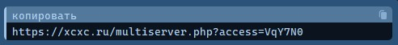
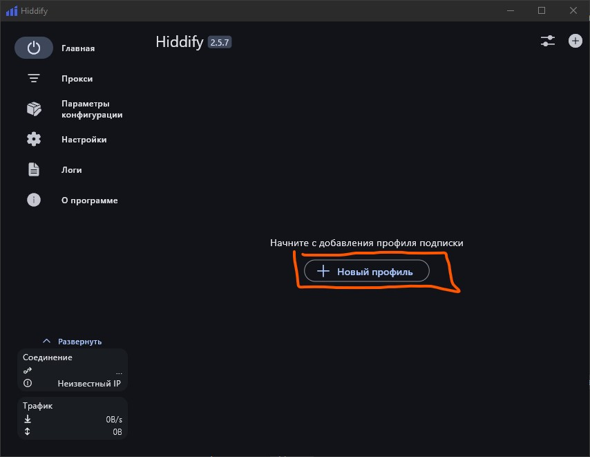
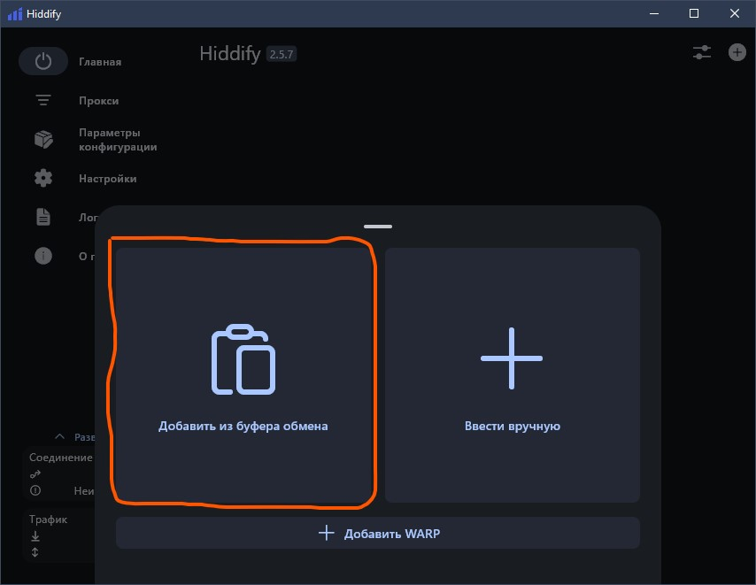
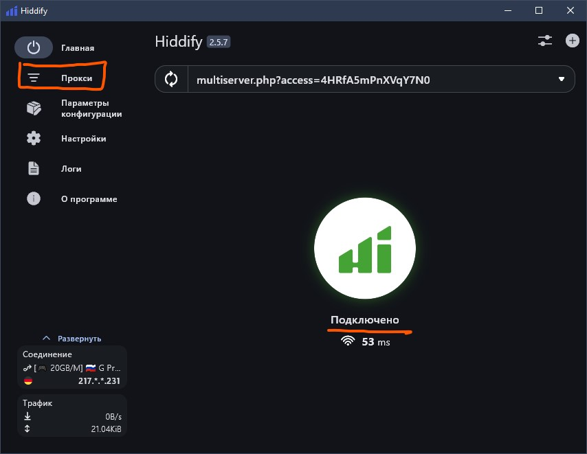
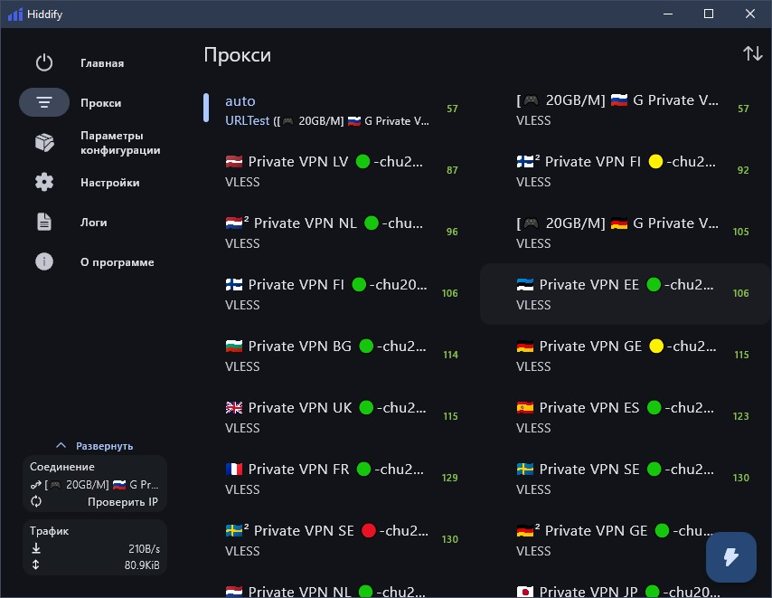
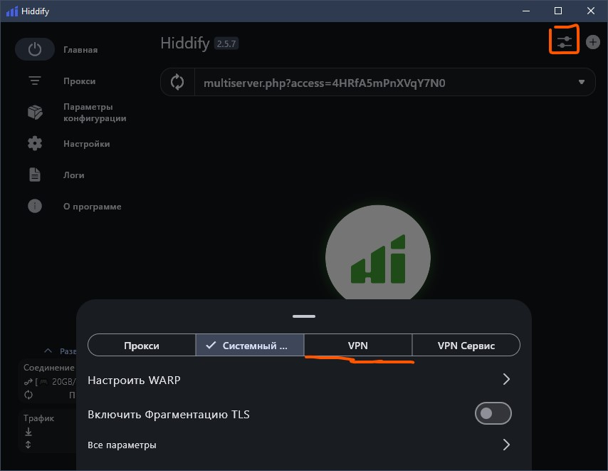

Murcher VPN
Устал от постоянно долгой загрузки ютуб, тикток? Или ChatGPT не запускается в самый нужный момент? Хочу вам предложить простой, быстрый и удобный VPN :)Чем он отличается от других?
Быстрые сервера
Скорость соединения от 500 до 1000мбит/сек. Пинг до 120, что хорошо подходит для дискорд и некоторых игр.
Около 15 локаций на выбор!
Безопасное соединение
Никто не узнает о том, какие сайты ты посещаешь и что на них делаешь.
Без рекламы и прочего
Тебе достаточно скачать приложение и выбрать нужный сервер. ВСЁ! Никакой рекламы и ограничений скорости.
Как начать пользоваться
1. Зайди в телеграмм бота и получи ключ.


Ключ будет иметь такой вид. Необходимо его скопировать!
2. Выбери свою платформу

Android
3. Скачай приложение
4. Открой приложение
Убедись, что скопировал ключ из бота!
5. Нажми на "+" в верхнем правом углу
6. Нажми "Импорт из буфера обмена
6. Выбирай нужную страну (сервер)
ГОТОВО :)
Windows
3. Первым делом определи как ты хочешь использовать VPN.
Смотри, можно его включить как на телефоне и он будет работать на все сайты и приложения.
Или же сделать так, чтобы только некоторые приложения или сайты работали через VPN.
Давай разберём, что будет лучше и удобнее для тебя :)
Без распределения. Работает на всё.
Всё довольно просто. Ввёл ключи и работает. Как ты сделал это на телефоне, так же само и на пк.
+ Плюсы:
- Всё очень просто
- Работает без ошибок (в основном)
- Минусы:
- В доте и дискорде не посидишь (пинг)
- Сайты по типу Госуслуг не загружаются, а ВК или банки тормозят
С распределением по приложениям и сайтам.
Этот способ сложнее, но зато vpn отключать не нужно! Можно играть в игры без потери пинга.
+ Плюсы:
- Настроил один раз и очень удобно
- Отключать не надо
- Гибко настраивается (нужные приложение или сайты)
- Минусы:
- Всё же долго настраивать
- После сна VPN-программа начинает лагать! Нужно перезапускать пк. Такое бывает на ноутбуках!
Давай начнём с простого способа, если тебе он подходит. В любом случае пролистай вниз и найди инструкцию для смешариков с проксированием.
4. В установщике нету ничего сложного. Просто далее :)
5. Запусти hiddify
6. Нажми новый профиль
7. "Добавить профиль из буфера обмена"
Скопируй перед этим ключ!
7. Подключись к VPN и нажми "Прокси"
7. Выбирай тебе нужную страну
7. На главной странице справа сверху тыкаешь на настройки и выбираешь снизу VPN.
Иногда программа плохо работает, поэтому пробуй в режиме системного прокси и vpn.
ГОТОВО :)
Ой... а дальше я сайт не написал... это занимает много времени...
Вот тебе ссылка на гайд, я оттуда всё брал
Кстати, специально для тебя сделаю рассылку из бота в телеграмме, когда здесь выйдет новое обновление по дизайну :)